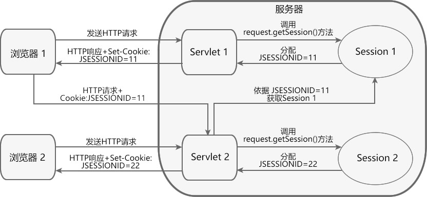
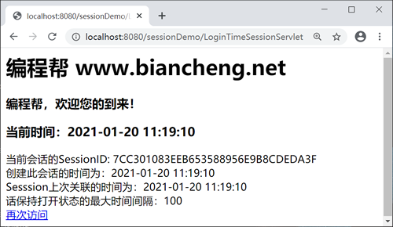
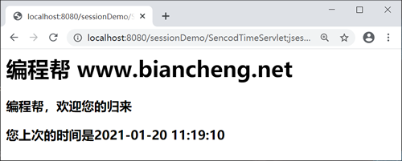

Servlet Session的使用
Session 是服务器端会话技术。当浏览器访问 Web 服务器的资源时，服务器可以为每个用户浏览器创建一个 Session 对象，每个浏览器独占一个 Session 对象。
由于每个浏览器独占一个 Session，所以用户在访问服务器的资源时，可以把数据保存在各自的 Session 中。当用户再次访问该服务器中的其它资源时，其它资源可以从 Session 中取出数据，为用户服务。
HttpSession 接口定义了一系列对 Session 对象操作的方法，如下表。
Session 的默认过期时间为 30 分钟，我们可以通过如下两种方式设置过期时间。
其中：
在 javax.servlet.http.HttpSession 接口中定义了一系列操作属性的方法，如下表。
Session 、request 以及 ServletContext 合称为 Servlet 的三大域对象，它们都能保存和传递数据，但是三者也存在许多差异，如下表。
创建名称为 SencodTimeServlet 的 Servlet 类，代码如下。
在浏览器地址栏输入“http://localhost:8080/sessionDemo/LoginTimeSessionServlet”，访问 LoginTimeSessionServlet，结果如下图。
点击“再次访问”超链接，访问 SencodTimeServlet，结果如下图。
由于每个浏览器独占一个 Session，所以用户在访问服务器的资源时，可以把数据保存在各自的 Session 中。当用户再次访问该服务器中的其它资源时，其它资源可以从 Session 中取出数据，为用户服务。
Session 的工作原理
Session 虽然属于服务端会话技术，但是它的实现离不开客户端浏览器和 Cookie 的支持，其工作原理如下。

- 当客户端第一次请求会话对象时，服务器会创建一个 Session 对象，并为该 Session 对象分配一个唯一的 SessionID（用来标识这个 Session 对象）；
- 服务器将 SessionID 以 Cookie（Cookie 名称为：“JSESSIONID”，值为 SessionID 的值）的形式发送给客户端浏览器；
- 客户端浏览器再次发送 HTTP 请求时，会将携带 SessionID 的 Cookie 随请求一起发送给服务器；
- 服务器从请求中读取 SessionID，然后根据 SessionID 找到对应的 Session 对象。
注意：
- 流程中的 Cookie 是容器自动生成的，它的 maxAge 属性取值为 -1，表示仅当前浏览器有效。
- 浏览器关闭时，对应的 Session 并没有失效，但此时与此 Session 对应的 Cookie 已失效，导致浏览器无法再通过 Cookie 获取服务器端的 Session 对象。
- 同一浏览器的不同窗口共享同一 Session 对象，但不同浏览器窗口之间不能共享 Session 对象。
Session 与 Cookie 对比
Session 和 Cookie 都属于会话技术，都能帮助服务器保存和跟踪用户状态，但两者也存在差异，如下表。| 不同点 | Cookie | Session |
|---|---|---|
| 存储位置不同 | Cookie 将数据存放在客户端浏览器内存中或硬盘上。 | Session 将数据存储在服务器端。 |
| 大小和数量限制不同 | 浏览器对 Cookie 的大小和数量有限制。 | Session 的大小和数量一般不受限制。 |
| 存放数据类型不同 | Cookie 中保存的是字符串。 | Session 中保存的是对象。 |
| 安全性不同 | Cookie 明文传递，安全性低，他人可以分析存放在本地的 Cookie 并进行 Cookie 欺骗。 | Session 存在服务器端，安全性较高。 |
| 对服务器造成的压力不同 | Cookie 保存在客户端，不占用服务器资源。 | Session 保存在服务端，每一个用户独占一个 Session。若并发访问的用户十分多，就会占用大量服务端资源。 |
| 跨域支持上不同 | Cookie 支持跨域名访问。 | Session 不支持跨域名访问。 |
Session API
Session 对象由服务器创建，通过 HttpServletRequest.getSession() 方法可以获得 HttpSession 对象，例如：//获取session对象 HttpSession session=request.getSession();
HttpSession 接口定义了一系列对 Session 对象操作的方法，如下表。
| 返回值类型 | 方法 | 描述 |
|---|---|---|
| long | getCreationTime() | 返回创建 Session 的时间。 |
| String | getId() | 返回获取 Seesion 的唯一的 ID。 |
| long | getLastAccessedTime() | 返回客户端上一次发送与此 Session 关联的请求的时间。 |
| int | getMaxInactiveInterval() | 返回在无任何操作的情况下，Session 失效的时间，以秒为单位。 |
| ServletContext | getServletContext() | 返回 Session 所属的 ServletContext 对象。 |
| void | invalidate() | 使 Session 失效。 |
| void | setMaxInactiveInterval(int interval) | 指定在无任何操作的情况下，Session 失效的时间，以秒为单位。负数表示 Session 永远不会失效。 |
设置 Session 过期时间
Session 对象在服务器中驻留一段时间后没有被使用，就会被销毁，这个时间就是 Session 的过期时间。Session 的默认过期时间为 30 分钟，我们可以通过如下两种方式设置过期时间。
1. 使用 <session-config> 元素
在 web.xml 中，使用 <session-config> 及其子元素 <session-timeout> 可以配置 Session 的默认过期时间，代码如下。
<?xml version="1.0" encoding="UTF-8"?>
<web-app version="2.5" xmlns="http://java.sun.com/xml/ns/javaee"
xmlns:xsi="http://www.w3.org/2001/XMLSchema-instance"
xsi:schemaLocation="http://java.sun.com/xml/ns/javaee
http://java.sun.com/xml/ns/javaee/web-app_2_5.xsd">
<!--设置session的过期时间-->
<session-config>
<session-timeout>10</session-timeout>
</session-config>
</web-app>
其中：
- <session-timeout> 元素用来指定默认 Session 过期时间，以分钟为单位，该元素值必须为整数。
- <session-timeout> 元素的值为零或负数，表示 Session 永远不会过期。
2. 调用 setMaxInactiveInterval() 方法
通过调用 session.setMaxInactiveInterval(int interval) 设置过期时间，以秒为单位，零和负数表示会话永远不会过期，代码如下。//设置会话的过期时间 request.getSession().setMaxInactiveInterval(100);
Session 的生命周期
Session 对象创建
Session 对象在容器第一次调用 request.getSession() 方法时创建。值得注意的是，当客户端访问的 Web 资源是 HTML，CSS，图片等静态资源时，服务器不会创建 Session 对象。
Session 对象销毁
Session 对象在如下 3 种情况下会被销毁：- Session 过期；
- 调用 session.invalidate() 方法，手动销毁 Session；
- 服务器关闭或者应用被卸载。
Session 域对象
Session 对象也是一种域对象，它可以对属性进行操作，进而实现会话中请求之间的数据通讯和数据共享。在 javax.servlet.http.HttpSession 接口中定义了一系列操作属性的方法，如下表。
| 返回值类型 | 方法 | 描述 |
|---|---|---|
| void | setAttribute(String name, Object o) |
把一个 Java 对象与一个属性名绑定，并将它作为一个属性存放到 Session 对象中。 参数 name 为属性名，参数 object 为属性值。 |
| Object | getAttribute(String name) | 根据指定的属性名 name，返回 Session 对象中对应的属性值。 |
| void | removeAttribute(String name) | 从 Session 对象中移除属性名为 name 的属性。 |
| Enumeration | getAttributeNames() | 用于返回 Session 对象中的所有属性名的枚举集合。 |
Session 、request 以及 ServletContext 合称为 Servlet 的三大域对象，它们都能保存和传递数据，但是三者也存在许多差异，如下表。
| 不同 | request | Session | ServletContext |
|---|---|---|---|
| 类型 | javax.servlet.http.HttpServletRequest | javax.servlet.http.HttpSession | javax.servlet.ServletContext |
| 创建 | 客户端向容器发送请求时创建。 | 容器第一次调用 getSession() 方法时创建。 | Servlet 容器启动时创建。 |
| 销毁 | 容器对这次请求做出响应后销毁。 |
Session 销毁的时机：
|
容器关闭或者 Web 应用被移除时销毁。 |
| 有效范围 | 只对当前请求涉及的 Servlet 有效。 | Session 对本次会话期间的所有 Servlet 都有效。 | 对整个 Web 应用内的所有 Servlet 有效。 |
| 数量 | Web 应用中的所有 Servlet 实例都可以有多个 request 对象。 | Web 应用中可以有多个 Session，多个 Servet 实例可以共享同一 Session 对象。 | 在整个 Web 应用中只有一个 Context 对象。 |
| 数据共享 |
每一次请求都是一个新的 request 对象。 通过和请求转发的配合使用可以实现一次请求中 Web 组件之间共享的数据。 |
每一次会话都是一个新的 Session 对象。 通过 Session 域对象可以实现一次会话中的多个请求之间共享数据。 |
在一个应用中有且只有一个 Context 对象，作用于整个 Web 应用，可以实现多次会话之间的数据共享。 |
示例
在 net.biancheng.www.session 包中，创建名称为 LoginTimeSessionServlet 的 Servlet 类，代码如下。
package net.biancheng.net.session;
import javax.servlet.ServletException;
import javax.servlet.annotation.WebServlet;
import javax.servlet.http.HttpServlet;
import javax.servlet.http.HttpServletRequest;
import javax.servlet.http.HttpServletResponse;
import java.io.IOException;
import java.io.PrintWriter;
import java.text.SimpleDateFormat;
import java.util.Date;
/**
* 记录上次的访问时间
*
* @author 编程帮 www.biancheng.net
*/
@WebServlet("/LoginTimeSessionServlet")
public class LoginTimeSessionServlet extends HttpServlet {
private static final long serialVersionUID = 1L;
protected void doGet(HttpServletRequest request, HttpServletResponse response) throws ServletException, IOException {
//设置页面输出的格式
response.setContentType("text/html;charset=UTF-8");
PrintWriter writer = response.getWriter();
writer.write("<h1>编程帮 www.biancheng.net</h1>"
+ "<h3>编程帮，程序员的好帮手，欢迎您的到来！</h3>");
// 记录当前的时间
Date date = new Date();
//时间的格式
SimpleDateFormat sdf = new SimpleDateFormat("yyyy-MM-dd HH:mm:ss");
//会话创建时间
Date CreationTime = new Date(request.getSession().getCreationTime());
//会话上次关联的时间
Date LastAccessedTime = new Date(request.getSession().getLastAccessedTime());
//格式化
String sDate = sdf.format(date);
//将当前时间赋值到session域对象中
request.getSession().setAttribute("lastTime", sDate);
//设置会话的失效时间
request.getSession().setMaxInactiveInterval(100);
//对session中各个信息输出到页面
writer.write("<h3>当前时间：" + sDate + "</h3>"
+ "当前会话的SessionID: " + request.getSession().getId() + "<br/>"
+ "创建此会话的时间为：" + sdf.format(CreationTime) + "<br/>"
+ "Sesssion上次关联的时间为：" + sdf.format(LastAccessedTime) + "<br/>"
+ "话保持打开状态的最大时间间隔：" + request.getSession().getMaxInactiveInterval() + "<br/>"
);
//浏览器不支持COOKIE
String url = response.encodeURL("/sessionDemo/SencodTimeServlet");
writer.write("<a href=" + url + ">再次访问</a>");
}
protected void doPost(HttpServletRequest request, HttpServletResponse response) throws ServletException, IOException {
doGet(request, response);
}
}
创建名称为 SencodTimeServlet 的 Servlet 类，代码如下。
package net.biancheng.net.session;
import javax.servlet.ServletException;
import javax.servlet.annotation.WebServlet;
import javax.servlet.http.HttpServlet;
import javax.servlet.http.HttpServletRequest;
import javax.servlet.http.HttpServletResponse;
import java.io.IOException;
import java.io.PrintWriter;
import java.text.SimpleDateFormat;
import java.util.Date;
/**
* @author 编程帮 www.biancheng.net
*/
@WebServlet("/SencodTimeServlet")
public class SencodTimeServlet extends HttpServlet {
private static final long serialVersionUID = 1L;
protected void doGet(HttpServletRequest request, HttpServletResponse response) throws ServletException, IOException {
response.setContentType("text/html;charset=UTF-8");
PrintWriter writer = response.getWriter();
//从session中获取上次访问的时间
String value = (String) request.getSession().getAttribute("lastTime");
//不是第一次访问
writer.write("<h1>编程帮 www.biancheng.net</h1>"
+ "<h3>编程帮，程序员的好帮手,欢迎您的归来</h3><h3>您上次的时间是" + value + "</h3>");
Date date = new Date();
//时间的格式
SimpleDateFormat sdf = new SimpleDateFormat("yyyy-MM-dd HH:mm:ss");
//格式化
String sDate = sdf.format(date);
//将当前时间赋值到session域对象中
request.getSession().setAttribute("lastTime", sDate);
}
protected void doPost(HttpServletRequest request, HttpServletResponse response) throws ServletException, IOException {
doGet(request, response);
}
}
在浏览器地址栏输入“http://localhost:8080/sessionDemo/LoginTimeSessionServlet”，访问 LoginTimeSessionServlet，结果如下图。

点击“再次访问”超链接，访问 SencodTimeServlet，结果如下图。

关注公众号「站长严长生」，在手机上阅读所有教程，随时随地都能学习。内含一款搜索神器，免费下载全网书籍和视频。

微信扫码关注公众号